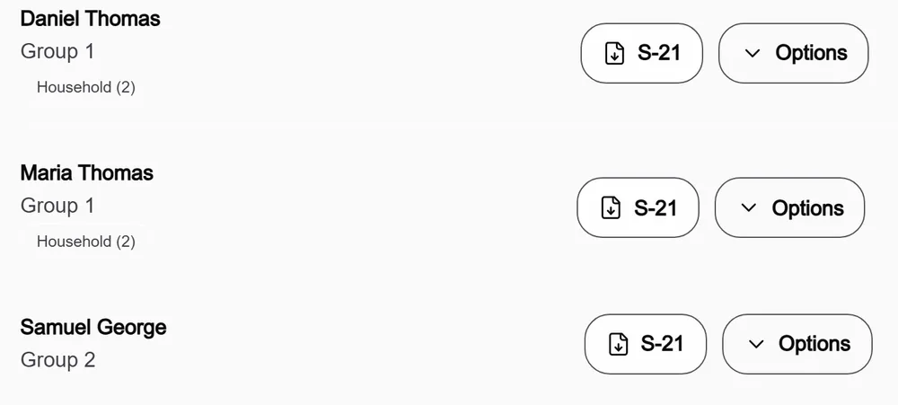
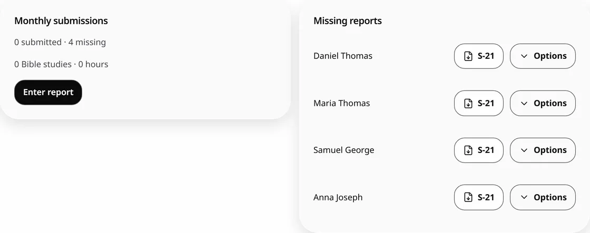
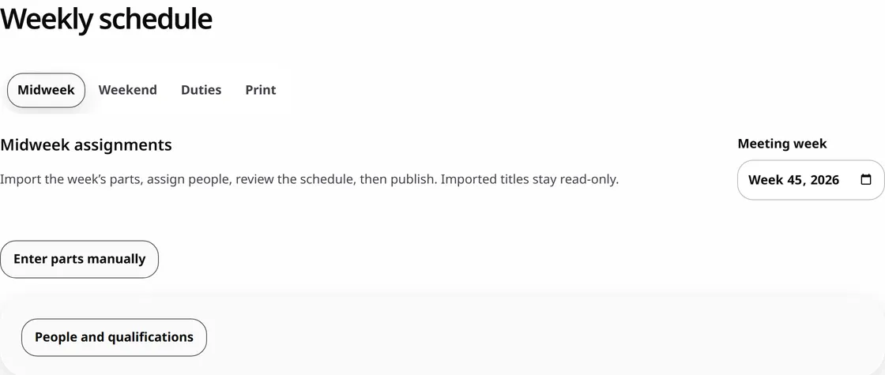
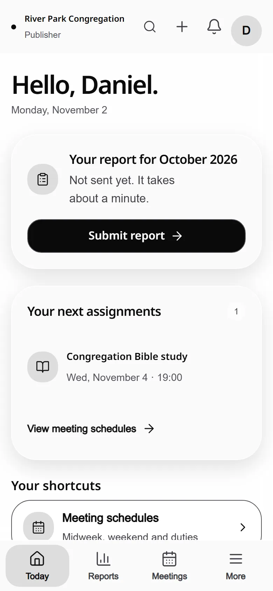

Less to manage.
More time for people.
Reports, S-21 cards, meeting schedules, duties and attendance for your congregation, in one calm app that works on any phone.
Independent and unofficial. The sample report is live. Try it.
| Month | Shared | Studies | Hours | Remarks |
|---|---|---|---|---|
| Aug | Yes | 2 | ||
| Sep | Yes | 1 | ||
| Oct | – | – |
- Anita JosephField group 2
- Daniel MathewField group 1
- Ruth AbrahamField group 3
First, publishers report from any phone.
A two-minute form. Linked household members can be reported from the same screen.
- Grace Thomas2 studies · today
- Thomas and Mary Paulhousehold · today
- Priya Raman52 hours · yesterday
- Benny George1 study · Mon
- Daniel MathewField group 1
- Ruth AbrahamField group 3
- Samuel VargheseField group 2
- Joel KurianField group 4
- Leena SamField group 1
| Month | Shared | Studies | Hours |
|---|---|---|---|
| Sep | Yes | 2 | |
| Oct | Yes | 2 | |
| Nov | |||
| Dec |
Features
Download a card beside any publisher, or choose everyone, pioneers, elders, ministerial servants, SFTS, or publishers with missing reports.

Group links, household reporting, and reminders you send yourself. The month’s missing list is always one tap away.

English meeting parts arrive from wol.jw.org. You choose who gives each part, then print or share the schedule.

See who was used last, find someone not used yet, and review fill-empty auto-assignment before anything is saved.
Talks and speakers, with a heads-up when a talk number was given recently.
Download an assignment for the student and assistant, or share the PDF yourself.
Audio Video, Attendants and Cleaning, drawn only from people the administrator approves.
The meeting date and type come from your congregation’s calendar and timezone. Enter the count and you’re done.
Nothing by that name yet. Try “report” or “S-21”.
Or just type it the way you’d say it.
Your words stay on your device. Nothing saves until you confirm it. This example uses fictional names.
Clear answers before you trust us.
Read Security & TrustMade by one developer you can email. No affiliation with any religious organization.
Approved users see only what their assigned role allows.
Database access rules, scoped public links, and tests on every release.
Loaded records and midweek drafts work offline and sync when you reconnect.
Administrators can download exports and recovery backups from Settings.
Open it in any browser, then add it to your home screen if you like.
One price for the whole congregation.
Everything is free until 1 May 2027, and Starter stays free forever. After that, annual access for the congregation is one payment, with no automatic charge.
₹1,499

a year, for the whole congregation
- Every publisher, overseer and admin
- Reports, S-21, schedules, duties and attendance
- Exports and recovery backups
- Email support from the developer
A few things you might wonder.
Is this official?
No. Congregation Assistant is independent and unofficial, with no JW logos or affiliation with any religious organization.
Who can see our data?
Approved members see records allowed by their roles. In Standard mode, the service operator can technically access the database. Security & Trust explains the boundaries.
Is Private mode available?
Private mode is unavailable until the full encryption tests pass. Current congregation records use Standard mode.
Do I need to install anything?
The app works in a browser. Install app first tries your browser’s prompt, then shows instructions for your device.
Does it work offline?
Previously loaded records and supported midweek drafts work offline. The app shows pending edits and syncs them when you reconnect. Other tools need a connection; watch the save status.
Can a household share one email?
Linked household publishers can use the household reporting flow. Your administrator sets up the relationship and account access.
What happens when the free period ends?
Check your workspace’s plan and expiry date. There is no automatic charge. Contact support about access, renewal, and the records you need to keep.
How do I get help?
Email support@congregationassistant.com. Do not send congregation records in your first message.
Your week,
handled.
Sign in with the Google account your congregation approved. Your administrator decides what you see.
Open your workspace
River Park Congregation
Independent and unofficial. Your congregation controls access.